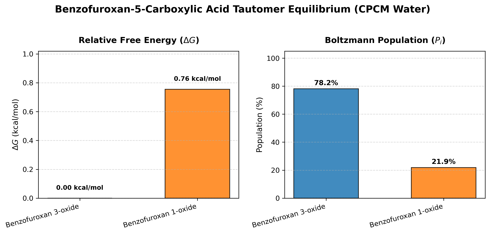
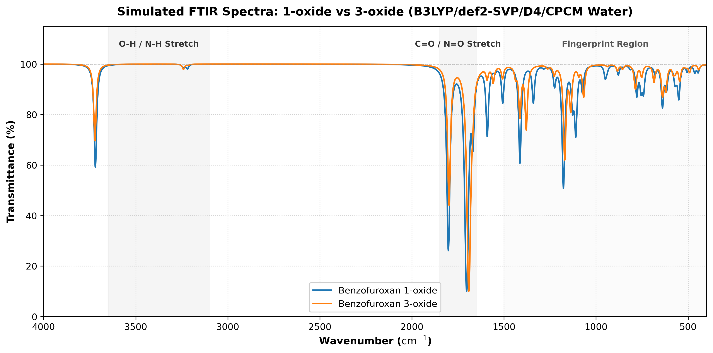
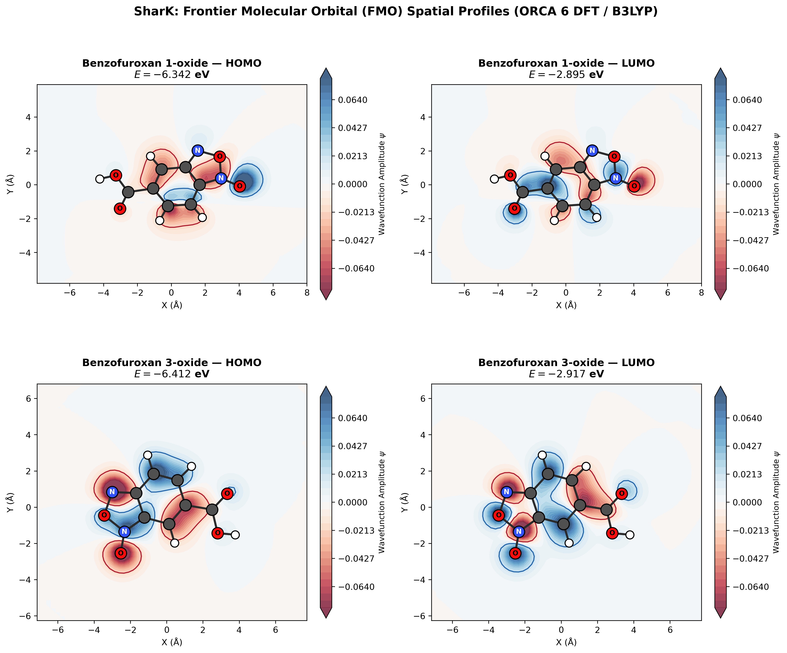
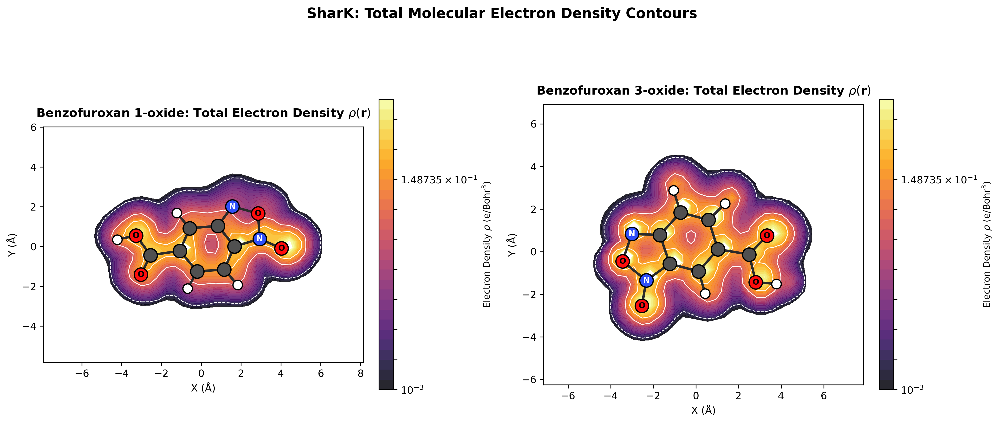

| Name | Converged | N_imag | E_el (Eh) | ZPE (Eh) | H (Eh) | G (Eh) | dE_el (kcal/mol) | dH (kcal/mol) | dG (kcal/mol) | Population (%) | Dipole (D) | HOMO (eV) | LUMO (eV) | Gap (eV) |
|---|---|---|---|---|---|---|---|---|---|---|---|---|---|---|
| Benzofuroxan 3-oxide | True | 0 | -678.617917 | 0.111650 | -678.495695 | -678.541415 | 0.000 | 0.000 | 0.000 | 78.15 | 3.597 | -6.412 | -2.917 | 3.494 |
| Benzofuroxan 1-oxide | True | 0 | -678.616717 | 0.111595 | -678.494526 | -678.540212 | 0.753 | 0.734 | 0.755 | 21.85 | 4.252 | -6.342 | -2.895 | 3.447 |



